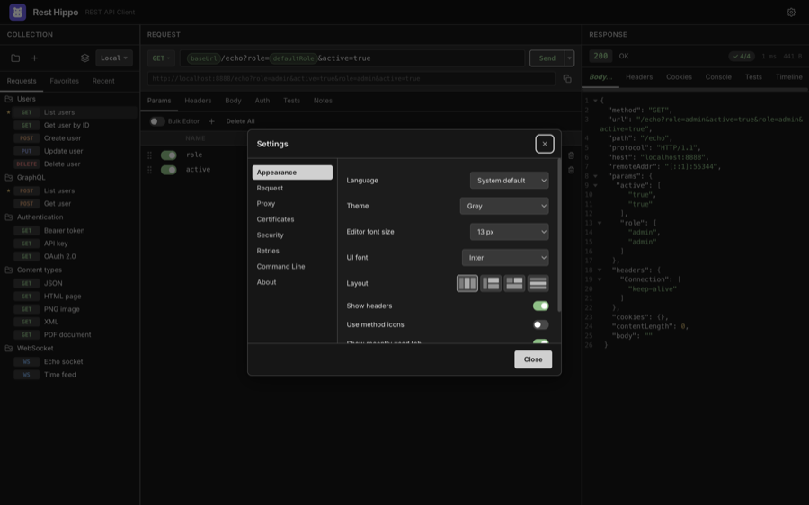
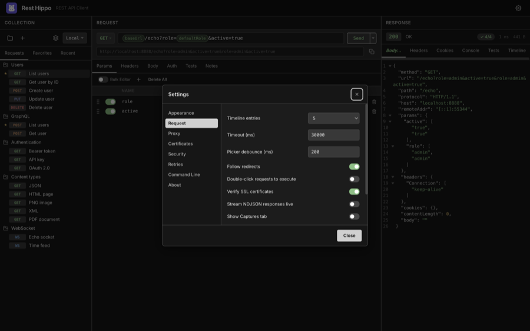
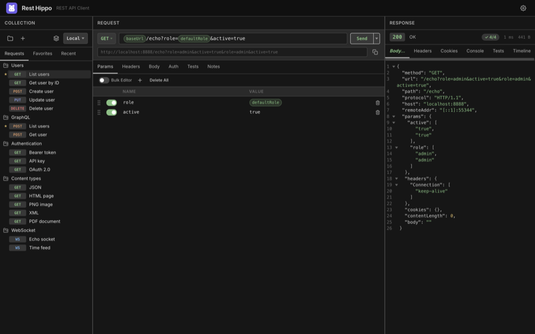

Settings & Themes
Open Settings from the ⚙ button in the header. Settings are grouped into panels down the left side and save as you change them — there's no separate save step.
Appearance

| Setting | What it does |
|---|---|
| Language | The interface language — System (follow the OS) or English, Deutsch, Español, Français, Italiano, 日本語, 中文（简体）. Changing it reloads the window. |
| Theme | The color theme, plus the Theme Editor… entry (see Themes). |
| Editor font size | Size of text in the code editors (11, 12, 13, 14, 16, or 18 px). |
| UI font | The interface typeface — Inter (bundled), your system font, or SF Pro / Segoe UI / Ubuntu / Roboto. |
| Layout | The panel layout (1–4). |
| Show headers | Shows the top header bar. Turn it off to hide the bar and move its controls into the collections panel, for a more compact window. |
| Use method icons | Show HTTP method badges as compact icons instead of text. |
| Show recently used tab | Show or hide the Recent tab. |
| Show URL preview | Show the resolved URL (with {{variables}} filled in) directly beneath the URL bar. |
You can change the editor font size anywhere with ⌘/Ctrl++ / - / 0. Code folding is toggled from each editor's own right-click menu rather than from Settings.
Request

| Setting | What it does |
|---|---|
| Timeout (ms) | How long to wait before giving up on a request. |
| Picker debounce (ms) | Delay before the {{ typeahead appears. |
| Follow redirects | Automatically follow 3xx redirects. |
| Double-click requests to execute | Double-clicking a request in the tree loads and sends it. |
| Verify SSL certificates | Reject invalid/self-signed certificates. Turn off to test against dev servers. |
| Show Captures tab | Show the Captures tab on the request editor. When off, the tab is hidden and capture rules are not run after a response. Off by default. |
| Show Scripts tab | Show the Scripts tab on the request editor. When off, the tab is hidden and pre-request / after-response scripts are not executed. Off by default. |
| Show Tests tab | Show the Tests tab on the request editor. When off, the tab is hidden and no-code assertions are not run after a response. Off by default. |
| Show Notes tab | Show the Notes tab on the request editor. On by default. |
Proxy
Route requests through an HTTP/HTTPS or SOCKS proxy. Enter a Proxy URL (the
scheme — http://, socks5://, … — selects the proxy type), optionally enable
proxy authentication with a username and password, and list hosts to
bypass (a NO_PROXY-style list supporting suffixes and * globs).
Certificates
Configure mutual TLS (mTLS) and custom trust for hosts that need more than the system certificate store.
Client certificates — present a certificate to hosts that require mutual TLS. Each entry has a Host pattern (exact, suffix, or
*glob, with an optional:port, matched like the proxy bypass list) and a Format: choose PEM to point at a certificate file plus an optional private-key file, or PFX / P12 for a single bundle. A passphrase can be supplied for an encrypted key or PFX. The first entry whose host matches a request wins, so list a specific host above a broader wildcard. The certificate is also presented automatically on redirects to a matching host and on OAuth token requests to one.Certificate authorities — add CA files to trust in addition to the system roots. This lets a privately-signed host validate with verification still on, instead of turning verification off globally.
Skip verification for hosts — a
NO_PROXY-style list of hosts whose TLS certificate is not checked. Use this only for trusted self-signed hosts when a custom CA isn't practical; it overrides the global Verify SSL toggle for those hosts only.
Only file paths are stored — Rest Hippo reads the certificate bytes in the background process when a request is sent. Passphrases are encrypted at rest using the secret-storage method chosen under Security (like all other secrets) and are removed from secret-free exports.
Security
Choose how Rest Hippo encrypts your secrets — auth passwords and tokens, OAuth client secrets, proxy credentials, mTLS passphrases, and variables marked secure — at rest on this device. Switching re-encrypts every stored secret; the change applies after a quick reload.
This device (no prompt) — the default. Secrets are encrypted with a random key kept in a protected file on this device, so there are no system prompts. The trade-off: the key sits alongside your data, so anyone who can read this computer's files could read your secrets. (On Windows and on Linux without a keyring, the OS-keychain option falls back to this behaviour.)
OS keychain — secrets are encrypted with your operating system's keychain (macOS Keychain, Windows Credential Manager, Linux Secret Service). This is the strongest at-rest protection, but the OS may show an access prompt.
Master password — secrets are encrypted with a password you choose. On each launch they start locked; enter the password once per session to unlock them (a locked secret shows an Unlock link where it's used). If you forget the password, the secrets cannot be recovered.
Existing installs keep using the OS keychain until you switch here; new installs default to This device. Switching to or from OS keychain may show one system prompt during the re-encryption.
Note: only secret values are encrypted. Execution history, response bodies, and the cookie jar are stored unencrypted in every mode.
Retries
Automatically retry failed requests with backoff. Configure the max
attempts, the backoff base, multiplier, and max delay, and choose
what to retry on — connection errors, timeouts, and/or a list of
status codes (e.g. 429, 503, 504). Retries are off by default.
When a retried response carries a Retry-After header, Rest Hippo waits for
the time the server asks (capped at your max delay) instead of the computed
backoff. To avoid duplicating a write, connection-error and timeout retries
apply only to idempotent methods (GET, HEAD, PUT, DELETE, …) — a POST/PATCH
that fails mid-flight might already have been processed, so it is not retried
on a network error unless you enable Retry POST/PATCH on network errors.
(Status-code retries still apply to every method, since the server's response
shows it didn't act on the request.)
History
Set how many runs each request keeps in its Timeline (1–10).
Command Line
The Command Line panel installs a hippo command so you can launch Rest
Hippo from a terminal — the equivalent of VS Code's "Install code command in
PATH". Click Install and afterwards typing hippo in any terminal opens Rest
Hippo (or focuses it if it's already running); click Remove to undo it.
The first time you start a freshly installed copy, Rest Hippo also offers to set this up for you — you can decline and install it later from here.
How it works per platform:
- macOS / Linux — a small launcher script is written to
/usr/local/binwhen that's writable, otherwise to~/.local/bin. If the fallback location isn't already on yourPATH, Rest Hippo tells you so you can add it. - Windows — a
hippo.cmdshim is created and its folder is added to your per-userPATH. Open a new terminal afterwards to pick up the change.
The command is only available in the installed app — it's disabled when running a development build, since there's no packaged executable to point at.
About & updates
The About panel shows the installed version, an Automatically check for updates toggle, and a Check for Updates button. Automatic checking is off by default: enable the toggle to have Rest Hippo look for new releases shortly after launch. The Check for Updates button — and Help → Check for Updates… — run on demand regardless of the toggle.
When a newer release is found it downloads in the background; once it's ready a notification offers to Restart and install it — Rest Hippo never restarts on its own. Updates are signed, so they install without security prompts.
Layouts
The layout picker in Appearance → Layout rearranges the three panels into four configurations — click a layout icon to switch:

| Layout | Arrangement |
|---|---|
| Side by side | Collections │ Request │ Response, in three columns |
| Left + stacked | Collections on the left; Request above Response on the right |
| Top + full bottom | Collections and Request on top; Response full-width below |
| All stacked | The three panels stacked top to bottom |
Rest Hippo also adapts automatically to narrow windows, and remembers where you drag the panel dividers.
Themes
Rest Hippo ships with four built-in themes — Mocha (the default dark theme), Grey dark, Latte (light), and Grey light — selectable from Appearance → Theme.
For full control, choose Theme Editor… from the theme dropdown to open the editor in its own window. It has two tabs:
- Colors — tune every colour token: backgrounds, text, accent and semantic colours, plus the per-method request badges.
- Metrics — adjust the layout tokens that control how dense the interface feels: the spacing scale, control heights (buttons, inputs, selects), corner radii, and the splitter thickness. Each is a pixel value.
Both tabs update the app with a live preview, so you can see your changes as you make them. Save your creation as a custom theme that appears in the theme list. Custom themes can be exported and imported to share.
The interface font for context menus always uses your OS's native typeface (San Francisco, Segoe UI, …); the UI font setting controls everything else.
Next: Keyboard Shortcuts →